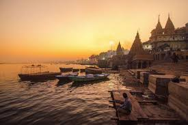
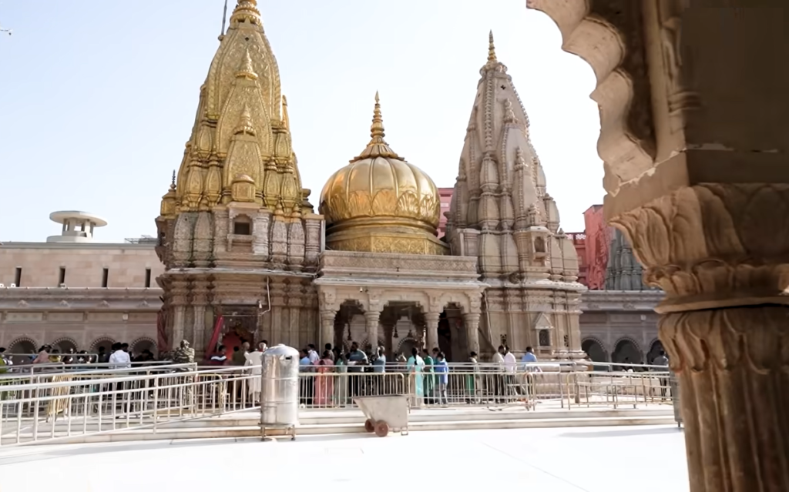
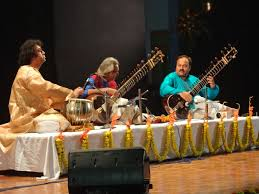
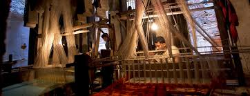
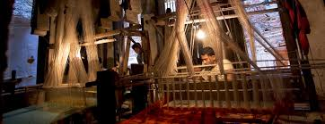

Varanasi is famous for its numerous ghats...
Varanasi is home to numerous temples...

Varanasi has a rich tradition of classical music, dance, and performing arts...
Varanasi is famous for its exquisite silk weaving industry...

 
